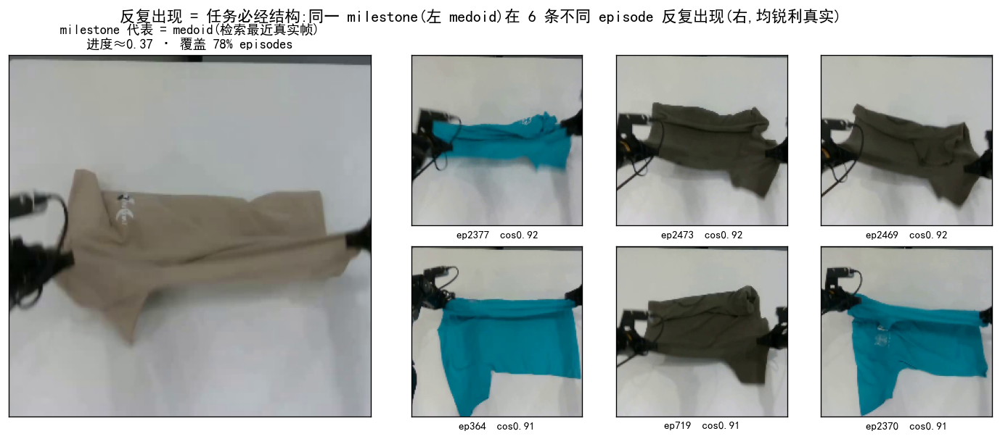
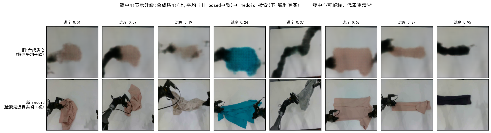

TL;DR关键结论
用监督模型一半的代价,拿到同等或更稳、还能跨任务直接复用的 progress。
1现状:当前监督 value/progress 模型的三大痛点
稠密进度模型是干嘛的? AWBC / RL 类训练需要每帧"任务完成到几成"的稠密进度信号,再由进度变化派生出 POSITIVE(该学)或 NEGATIVE(该避)的动作标签。当前主流做法是监督训练一个 value/progress 头。
KAI0-AE = 上述监督路线;PI 系(π*0.6-RECAP 等)可用监督进度差或外部奖励派生训练信号,流程类似。
监督 value 逐帧抖动,导致 AWBC 的正/负标签在同一段动作里来回横跳——学到的是噪声而非真信号。下图 kai0_base ep2302(成功叠衣)的 KAI0-AE 四联图:① absolute_value(进度值)→ ② relative_value(AE 直出、P/N 依据)在 0 附近剧烈抖动、正负翻转 256 次 → ③ 二档(pos/neg)分类条红绿满屏交错,④ 三档(加 deadband)仍 churn。同一段成功动作被反复标成 NEGATIVE = 纯噪声。

传统 value 在不少帧上升降缺乏可解释性。下面是几条较长 kai0_base episode的 KAI0-AE value + 分类条(绿 POS / 灰 NORMAL / 红 NEG),配相机帧——可直观看到"看不出凭什么升降"的片段。都是成功叠衣 episode,AE 却标 14–23% 为 NEGATIVE = 纯噪声:
注:P/N 分类按 AE 直出的 relative_value(与痛点① 一致),非 Δabsolute_value 差分。
根因:用相似度度量,折叠动作让画面外观骤变 → 与"已折叠"原型的相似度骤降 → value 假跌,折完才恢复(对折叠过程的相似度不鲁棒)。下面两段叠衣收尾实例直观可见 value 突然下跌 → 恢复:
2CRAVE 核心思想
2.0 痛点 → CRAVE 怎么解
| 痛点 | CRAVE 怎么解 |
|---|---|
| ① AE 抖动 → 正负交错 | milestone 阶梯 + 双锚 Viterbi-DP 全局最优 → progress 平滑单调,正负段化稀疏而非逐帧横跳 |
| ② 升降不可解释 | progress = "在哪个反复出现的 milestone 簇上" → 每次升/降都能指着具体 milestone说清楚 |
| ③ 末端相似度假跌 | 不只看瞬时相似度:转移惩罚 + 簇间转移概率(知道"末段不会跳回起始态")→ 压住假跌 |
2.1 灵感来源:反复出现 = 任务必经结构
同一任务的众多 demo 里,关键 milestone 会在不同 episode 反复出现(抓取→摊开→对折→叠好)。把"跨 episode 的统计重复性"当作无标签的监督信号:反复出现的状态 = 任务必经 milestone。

2.2 三步直觉(全程零训练)
全链无梯度更新:DINOv3-base 冻结 + PCA + 贝叶斯GMM + 双锚 DP,没有任何可学习参数被训练。
2.3 充分利用「簇间转移概率」(直接解痛点③)
从 demo 统计"当前 milestone 的下一个最可能是谁"的经验概率 P(next | cur),折进 DP:它知道"末段几乎不会跳回起始态",于是把相似度造成的末端假跌重罚压住。质量集中在对角线右上(单向前进 + 合法跳级),"中段→起始"近乎为 0。

P(next|cur):对角线右上为主(任务单向前进),"中段→起始"≈0 → 循环态 alias 被先验重罚。3效果对比(每条回扣痛点)
3.1 in-distribution(监督 AE 的主场)→ 解痛点①
同域(kai0)同数据公平对比,kai0_base 折叠成功 ep2302:零训练 CRAVE 与监督 AE 末值同到完成,但 CRAVE 更平滑、分类更干净 —— 单调率 87% vs 52%,POS/NORMAL/NEG 分类带 CRAVE 成块(绿/灰为主),AE 红碎噪声满布。

3.2 progress 升降可解释 → 解痛点②
CRAVE 的每次 progress 升/降都对应明确的动作。下图 ep2302(0:06–1:17 段):铺开 → progress 上升(POSITIVE)、拎起 → progress 下降(NEGATIVE)、平稳保持 → NORMAL —— CRAVE 的升降与动作对齐整齐,主观一眼就能解释 progress 为什么升/降。
3.3 跨数据集泛化(配方逐字不改)
同一冻结配方套全新数据集:XVLA 叠衣 corr 0.962、真实 ALOHA 咖啡 corr 0.997 —— 学的是"跨 demo 重复结构 = 进度"的通用规律,而非单数据集过拟合。配方还进一步扩到 12 个任务(2 域 + 新本体 + 9 个 ALOHA)一个共享 value model,mean corr 0.977(见 §6 复用)。下面两段为 CRAVE 在两个全新数据集上的逐帧 progress + milestone 对齐演示:
4实现原理
4.1 milestone 自动浮现



4.2 为什么用「簇平均 progress」当 milestone 进度(progress 一致性)

4.3 progress 读出:双锚 Viterbi(离线标准)
Viterbi(全局最优路径)：不是单帧独立决策,而是用全局动态规划把整条轨迹的 milestone 序列一次解出——单帧因光照/褶皱/角度突变导致的抖动,被路径连贯性(转移罚 λ|Δbin|)平滑掉,得到平滑单调的阶梯 progress。
转移概率(压末端假跌)：从大量 demo 中学到"任务只能往前推进",所以当某帧突然像起始态(折叠时画面骤变→相似度假跌),Viterbi 会说"末段跳到起始的概率极低",不会真的跟丢、progress 不会随之暴跌——直接解掉痛点③。
双锚(替代 per-ep norm01,关键修正)：起点锚=全 ep 首 3 帧均值→固定为 0,终点锚=全 ep 末 3 帧均值→固定为 1;Viterbi 强制首帧=bin0、末帧=bin1.0。这样 raw 值天然 0→1(不再靠 per-ep min-max 拉伸掩盖"达顶失败"),且 DP 为登顶必阶梯经过高 milestone(0.6→0.83→0.96)→ 高 milestone 被激活、中段形状诚实。标准读出不加 smooth、不加 norm01,vs 监督 stage_gt corr 0.943、单调 0.981、末值 0.999。
去阶梯 polyline(平滑版)：硬阶梯可再去阶梯成平滑曲线——每个连续 milestone 段取离簇心最近的代表帧钉在簇值,相邻代表帧之间线性连成折线。得到锚在"最典型帧"上的分段线性 ramp(vs 监督 GT corr 0.957,更贴平滑 GT)。下一节 §5.2 的在线 GRU 蒸馏的正是这条去阶梯 polyline teacher。

以上是离线读出(需整条 episode)。真机部署要完全因果、零未来的在线读出 —— 见下一节 §5。
5在线推理(完全因果 · 零未来)
§4 的双锚 Viterbi 是离线读出——它的全部威力来自"知道未来"(全局回溯 + 强制末帧=1)。真机部署要完全因果:每来一帧只用 ≤t 的信息、零延迟输出 progress。CRAVE 的落地做法很直接:把 §4 的去阶梯 polyline 读出当 teacher,蒸馏进一个严格因果的 GRU——推理时零未来,却用"学到的未来预期"追平离线。
5.1 核心矛盾:离线靠未来,在线必须因果
离线 Viterbi 靠两件事拿到干净 progress:① 全局回溯把每个转变提前锁定;② "强制末帧=1"反向激活高 milestone 登顶。完全在线两者都没有——只能凭已见帧、当场输出。补"未来"有两条路,我们都试过,最终收口到"学到的未来":
⚠️ 因果先验(零训练,已弃用)
- 流式 forward-DP + 前向偏置(上升便宜/下降贵)+ 单调 ratchet。
- 无需训练、微秒级;但只靠手写先验补未来 → 末段登顶抬不上去(末值封顶 ~0.82、corr 0.86 就到顶)。
- 已被右侧 GRU 取代,不再采用(细节见
docs/HISTORY.mdD2)。
✅ 学到的未来预期(蒸馏)★
- 把离线 polyline teacher 蒸馏进单向 GRU。
- GRU 从几千条同类轨迹里学"这个状态之后通常怎么走"——用学到的先验补滞后、选级、登顶。
- 最终方案,corr 追平离线(下 5.2)。
5.2 因果 GRU 蒸馏 polyline teacher ★
把离线双锚 Viterbi 的去阶梯 polyline 读出(§4.3 末,代表帧分段线性、平滑 ramp)当 teacher,训一个单向 GRU(结构上严格因果) 当 student 回归它。GRU 见过几千条同类轨迹,内化了"这个状态之后进度通常跳到 X / 平台还剩多久 / 这类轨迹会完成"——用学到的未来预期补上滞后、中段选级、甚至登顶,而推理时零未来。蒸馏 polyline(而非硬阶梯)让 student 输出天然平滑,无需再做后处理平滑。
模型架构 · 参数量(在线因果 value 头)
- 参数量:GRU 701,952 + head 33,025 = 734,977 ≈ 0.735M(ckpt 2.94MB);同一模型可跨 12 任务共享(见 §6)。
- 推理代价:逐帧复用隐状态、O(1)/帧;完整在线栈 = 一次冻结 DINOv3-base 编码(ViT-B/16 ~86M,跨任务共享)+ 微秒级 GRU 递推。
- 训练代价:蒸馏离线 polyline teacher,MSE 回归,2000 train / 300 eval,~2min(1×A100);milestone 发现本身零训练、零标注。
- 效果:留出集(严格未见)corr vs 监督GT 0.955 ≥ 离线本身 0.943 → gap 归零,还平滑掉了离散阶梯噪声。

5.3 vs 监督 AE:架构代价与优缺点对比
报告开头的三大痛点都来自监督 value 头(KAI0-AE):它是一个 3 层 value MLP,挂在完整 pi0 VLA(PaliGemma 2B + SigLIP + action expert,~3B+ 参数)之上——每帧要跑整条 VLA 前向、每个任务要用 GT/reward 重训整套。CRAVE 在线 value 走的是完全相反的路线:冻结共享编码器 + 0.735M 因果小头。逐维度对比:
| 维度 | KAI0-AE(监督 value 头) | CRAVE 在线 GRU |
|---|---|---|
| 模型 / 参数 | value MLP 挂在完整 pi0 VLA(~3B+) | 冻结 DINOv3-base(~86M,共享)+ 0.735M 因果 GRU |
| 任务专属可训练量 | 整套 VLA / value 头每任务重训 | 仅 0.735M GRU 蒸馏 ~2min,小 ~4000×,可跨 12 任务共享 |
| 标注成本 | 需人工 / 规则 GT 或外部 reward | 零人工标注(跨 ep 复现自监督) |
| 每帧推理 | 跑整条 ~3B VLA 前向(重) | 一次 ~86M 编码 + O(1)/帧 GRU 递推 |
| 时序稳定性 | 逐帧独立回归、无时序积分 → 抖动(ep2302 正负翻转 256 次) | 单向 GRU 累积 ht,平滑单调、正负段化稀疏 |
| 末端行为 | 相似度骤变 → 末端假跌 | 转移先验 + 学到登顶,无末端假跌 |
| 可解释性 | 黑盒回归标量 | 每帧对应具体 milestone,升降可指认 |
✅ CRAVE 在线 GRU 的优势
- 任务专属部分小 ~4000×:0.735M vs ~3B,ckpt 2.94MB,真机 O(1)/帧实时;
- 零标注 + 近零训练:milestone 零训练,仅小头蒸馏 2min,完全不动大 VLA;
- 跨任务复用:同一头跨 12 任务共享(mean 0.977),demo 少的新任务挂 trunk 即用;
- 干净可解释:平滑单调、段化稀疏、每帧对齐 milestone,直接解掉三大痛点;
- 严格因果:结构上零未来,不像离线 Viterbi 需整条 episode。
⚠️ 代价 / 边界
- 依赖一个冻结视觉编码器(DINOv3-base)+ 一次性 milestone 发现步骤;
- 需足够多同任务 demo让"复现"显现,否则 milestone 挖不出;
- 末端登顶靠"训练全成功 demo"的先验,真机失败 rollout 可能高估(所有在线法通病);
- 是进度 / value 估计器,不直接产动作——与 VLA 策略解耦互补,非替代。
6优缺点、适用边界与选型
CRAVE 用"跨 episode 复现 + 簇间转移概率",零训练地把三个痛点逐一解掉——抖动→平滑段化、升降可解释、末端假跌被压住,且跨任务直接复用。
✅ 优点
- 零训练零标注 —— 省每任务重训与标注成本
- 可解释 —— 每帧能指着具体 milestone 说清升/降
- 跨数据集泛化 —— 配方不改套新本体/新任务
- 退步信号干净稀疏 —— OOD 上对齐真事件
- 平滑单调 —— 正负段化,不逐帧横跳
⚠️ 缺点 / 边界
- 依赖挖矿域与目标域对齐(挖矿数据要和评估任务同分布)
- 转移概率对正常走势是中性的——只在"同态/循环态假跌"上有用,且须轻权重;跳步检测不行
- milestone 空间形态下完成态读数偏低,需保留一个软 completion bias
- 跨任务能力有限:不能只靠文本/单条视频零样本理解任意新任务,通常需要目标任务的一批 demo 来重新浮现 milestone
- 需要足够多的同任务 demo才能让"重复"显现
何时用 CRAVE / 何时用监督 AE
| 场景 | 选 CRAVE | 选监督 AE |
|---|---|---|
| 没有 GT/标注、想零成本起步 | ✅ | — |
| 新任务/新本体要快速复用 | ✅ 配方不改 | 需重训 |
| 真机 rollout 要干净退步信号 | ✅ 稀疏对齐 | 弥散 |
| 已有大量 GT、只求单数据集极致 MAE | 可选 | ✅ 主场 |
| 同任务 demo 很少(重复不显现) | ⚠️ 慎用 | ✅ |
7下一步计划：从描述 → 预测 → 决策
当前 CRAVE 还是一个"描述器"。下一步是从"看懂"到"能预测、能规划、能决策"——构建一个以 task-aware latent milestone 为核心的世界模型。
7.1 AWBC + Process Reward (决策与在线优化)
有了 task-aware latent milestone 和转移图,下一步是让机器人能用这个模型做决策:
- AWBC 离线策略:milestone 天然的 state abstraction——在几十个有语义的状态上学习"当前阶段的最优动作",样本效率远高于像素级 RL;
- Process Reward:CRAVE 的 progress 是稠密进度信号,可进一步转换为 process reward / progress-derived reward;当实际进度落后于转移模型预期时,给出负向训练信号,让策略在线调整;
- 闭环迭代:离线学→线上发现差距→收集新数据→改进策略。
7.2 Latent Milestone World Model -- Recurrence Latent Milestone Probability Graph (milestone 转移概率模型)
这一节把两件事合在一起:先把 latent milestone 定义为世界模型里的离散状态,再在这些状态之间统计 Recurrence Latent Milestone Probability Graph。也就是说,CRAVE 不是预测下一帧像素,而是预测“任务接下来更可能进入哪个 latent milestone”。
现有世界模型通常卡在两个极端之间:
- Naive pixel-level:预测下一帧像素,绝大部分像素对任务无意义,计算浪费且不抽象;
- "Physical state" 声称(如 JEPA):声称学到了物理表征,但没有机制保障——模型可以"作弊"走捷径而不真正理解任务结构;
- 3D/point-based:深度噪声大、遮挡不稳定,且缺乏任务相关语义——它知道物体在哪,但不知道"这个状态在任务中意味着什么"。
CRAVE 采用中间路线:用 DINOv3-base 视觉语义、14D 本体位置和跨 episode 共现聚类共同定义 task-aware latent milestone。
- 视觉基座:DINOv3-base(768D pooled → PCA128,隐含分割/深度) → 提供视觉语义
- 本体状态:14D 关节位置(与 img 各自 L2、能量 1:1)拼接 → 注入自身姿态感知
- 共现聚类:贝叶斯GMM(自适应K)+ 覆盖率≥0.5,将"任务中反复按顺序出现的状态"归为 milestone → 注入任务语义
三者融合为一个 142D(img PCA128 ⊕ 位置14)的联合 latent 特征空间 → latent milestone(任务阶段压缩表征)。当每一帧都能通过 Viterbi 读出为一个 latent milestone 后,大规模 episode 就变成 latent milestone 序列;在这些序列上统计 P(milestonet+1 | milestonet, at),就得到 milestone 转移概率图。

P(next milestone | current milestone)。粗线表示高概率前进路径,红线表示低概率回退/异常路径。图中用 3 层示意一段短期预测链。基于簇间转移概率可以得到两类下一 milestone:Greedy Milestone 在整张 milestone graph 上用 Viterbi / max-product 搜索通向完成态的最高概率路径,再取这条路径上的下一步 latent prototype 作为子目标提示;Max-Probability Milestone 则从当前 milestone 出发,直接取一步转移概率最大的 argmax P(milestonet+1|milestonet),用于短期预测和异常检测。
Current observation · real frame

Current milestone center · milestone #8

Greedy Milestone · #13

Max-Probability Milestone · #17

argmax P(milestonet+1|milestonet) 选择一步概率最大的后继,用于短期预测和异常检测。7.2.1 下一 milestone 的可审查解码 — 归档两套解码方案
预测出的下一 milestone 是一个 latent prototype,可解码成图像供人审查。我们在多种解码器中只保留两套忠实(非幻觉)方案做归档,其余已淘汰(GAN 会凭空编造细节 / GDL 与再编码一致性损失训练失败或产生对抗噪声 / 检索式不展示模型自身预测):
- L1(高一致性):确定性回归到条件均值——同一 latent 永远解出同一张图、绝不幻觉,但偏软(re-encode cos 0.33 / sharpness 194)。
- flow(最好效果)★:条件 flow-matching 像素解码器,在真实图像分布内采样——锐利且忠实(re-encode cos 0.69 / sharpness 493),结构上无法产生对抗垃圾;gf3 八卡扫参(base 96/128/160)胜出。

两段视频逐字保持同一提示与布局(同一 episode、同一 milestone+1 语义、同一面板文字),只替换解码器,便于把差异直接归因到解码方案本身。归档到此为止:仅 L1 与 flow 两套,其余淘汰。
7.3 与 VLA 架构结合: CRAVE + VLA → LMWAM
CRAVE 可以和通用 VLA 策略结合成 LMWAM (Latent Milestone World Action Model):CRAVE 负责从真实 demo 中发现 latent milestone、预测下一 milestone 并给出转移概率,VLA 负责在语言、视觉历史与机器人状态条件下完成动作生成。这样把“世界模型的 milestone 预测”和“策略模型的动作执行”解耦,避免把未来目标强行生成成像素图。

CRAVE 对 PI07 类流程的额外价值
- 子任务指令自动生成:按 milestone 语义排序形成“先A再B后C”的任务链,减少人工拆子任务。
- 任务元数据(质量标签):用稠密 progress 和 relative progress delta 生成质量/进度标签,替代手工评分。
- 更优子目标来源:milestone 来自真实操作数据,可作为 BAGEL 子目标图像路线之外的更稳选择。
- 快速适配新任务:采集目标任务 demo → CRAVE 挖结构 → VLA/PI07 类策略复用这些结构化提示。

LMWAM 中 CRAVE 给 VLA 的输入
- Latent milestone subgoal → Action Expert 条件输入
下一 milestone 的簇中心 latent prototype 作为子目标提示,不依赖 BAGEL 或其他图像生成器。 - Transition probability → VLM context / 置信度提示
把“当前 milestone、候选 next milestone、路径概率”作为可解释的规划上下文注入 VLA。
简单说: LMWAM = CRAVE 的 latent milestone world model + VLA 的 action model。CRAVE 不替代 VLA,而是为 VLA 提供可审计、可规划、来自真实数据的 latent milestone 级提示;同时它也能为 PI07 类训练流程提供子任务指令、任务质量标签与规划先验。
7.4 为什么要这样做
🎯 核心价值
- 非两端:CRAVE 的 latent milestone 既不是过细的像素,也不是无保障的"物理",而是任务语义中介——看得见、分得开、预测得了
- 全自动:从原始操作视频到世界模型,不需要人工标注/奖励设计/任务编程——数据驱动
- 可解释:milestone 对应可理解的任务阶段,转移图可审计——"为什么决策?因为模型预测有80%概率下一步是这个"
- 可迁移:视觉基座(DINOv3)和共现聚类机制跨本体跨场景复用
📅 时间线
- 已完成:CRAVE v2.4 多域 milestone 挖掘 + progress 解码 + 跨域推理 ✓
- 2026 Q3:多模态融合 + Recurrence Latent Milestone Graph 首版
- 2026 Q4:AWBC 离线策略原型
- 2027 H1:Process Reward 在线闭环